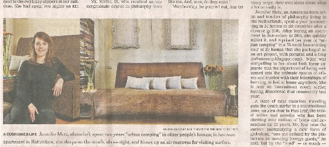
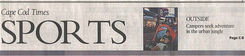
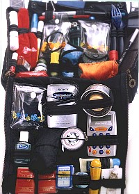
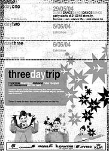
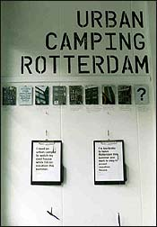

|  |  |  |  |  |
 |
Urban Camping exhibits, blog, newspaper articles 2004-2007 |
|
2007 Composite Housing In September 2007, House & Home writer for The New York Times, Penelope Green, contacted me through my blog. On the phone she told me she'd been reading my blog since July and wanted to write an article. The article, Surfing the Worldwide Couch, was published on 20 September 2007.  2005-2006 Urban Camping and Viewpoints Starting on 1 August 2005, I rented out my house and stayed with friends for 12 months and three weeks. I stayed in 30 places on this third urban camping venture.  I kept a blog (www.urbancamp.blogspot.com) and Ariel Brewster wrote about the experiences of various urban campers (including me) in an article that was published in the 20 April 2006 Cape Cod Times. Whenever you travel for an extended period of time, you leave your normal routine and face unexpected people and places. It's my experience that urban camping allows you to 'think outside the box' by 'getting outside your box'. It is both refreshing and exhausting to learn to feel at home anywhere, switching from one viewing point to another in a short period of time. During this period, I studied Discourse and Argumentation at the University of Amsterdam. It looks to the history of philosophy to see how people have used reason to support a viewpoint. I enjoyed these two simultaneous and very different experiences of points of view. 2005 Resident, Residence "Ideas about mass transit and shoe care ..." From 5-25 March 2005, I had another chance to exhibit some urban camping work with M. Guerra, F. Delgado, L. Ruiz, L. Peeters, L. Sawahata, M.A. Schaik, J. Blanco, P.A. Guerrero, F. Parga, A. Castrellon, M. Robert III, R. Monarrez and F. Fernandez at the NE Gallery in Rotterdam On display were the nomad packand a draft of my urban camping experiences to date. The story from the 'book' became the first part of the blog (www.urbancamp.blogspot.com) that documented the next urban camping trip starting in 2005. 2004 3 Day Trip - A Composite View on Housing and a Very Cool Summer Home From September 2003, there was an incubation period of traveling around to Buenos Aires, Sao Paulo, Rio de Janeiro, Lima, London, Munich, Mumbai, Delhi and Rome (and seeing 40 films at the International Film Festival Rotterdam). Then, I did some of my Urban Camping work at a group exhibition in May 2004 called Three Day Trip at Spazio Chon in Rotterdam. After my divorce, I had nomadically travelled around for 11 months staying in 24 places in The Netherlands, Portugal, Canada, USA, Brazil and Argentina (house-sitting, couchsurfing, business trips, artist residencies, camping in my studio) before finding my own place. After a year in my own house, I started to miss the old nomadic days and set out to find a very cool vacation house while sharing my composite housing perspective. On the last day of the Exhibit, one of the artists said, "I think I know a house for you." The house belonged to a wonderful family on their way to London. For three weeks they let me stay in their 3-story house with 7 bedrooms and lovely balconies, porches and backyard / garden. The ceiling of one room was painted by an artist who also painted one of the ceilings in one of the palaces of the Dutch Queen. It was a very cool summer home indeed. |